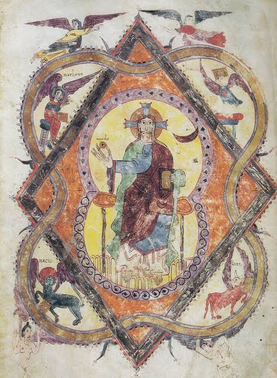

Arte Medieval
476 d.C a 1492
CONTEXTO HISTÓRICO:
A Idade Média é o período da história geral que se inicia no século V, logo após a queda do Império Romano do Ocidente, e termina no século XV, com a conquista de Constantinopla pelo Império Turco-Otomano. Foi um período marcado pela síntese da herança romana com a cultura dos povos bárbaros que invadiram o Império Romano.
A Igreja Católica tornou-se uma instituição poderosa e influente não apenas na religião, mas também na sociedade medieval. A invasão bárbara provocou a fuga da cidade em direção ao campo. A Europa ocidental ruralizava-se, e a riqueza era a terra. A agricultura tornou-se a principal atividade econômica, e a produção dos feudos era para o próprio sustento.
A partir do século XIII, por conta dos renascimentos comercial e urbano, o mundo medieval começou a entrar em crise. A centralização do poder nas mãos dos reis derrotou os senhores feudais, pacificou as revoltas servis e abriu as portas da Europa para a Idade Moderna.

Na arte:
Mulheres artistas na Idade Média criaram manuscritos iluminados notáveis e têxteis elaborados, embora suas contribuições tenham permanecido em grande parte anônimas ou restritas a conventos religiosos.
A arte medieval concentrava-se na fé, e não na fama individual. A sociedade limitava o acesso das mulheres a corporações de ofício formais e oficinas públicas. Os conventos ofereciam um espaço raro para que as mulheres pudessem ler, escrever e criar arte.
Artistas:
Referência bibliográfica:
ELIAS, Kauane. Renascimento: características, contexto histórico e influências. Estratégia Vestibulares, 8 nov. 2022. Disponível em: vestibulares.estrategia.com/portal/materias/historia/caracteristicas-do-renascimento.
SMARTHISTORY. Female artists in the Renaissance. Smarthistory, [s. d.]. Disponível em: smarthistory.org/female-artists-renaissance.